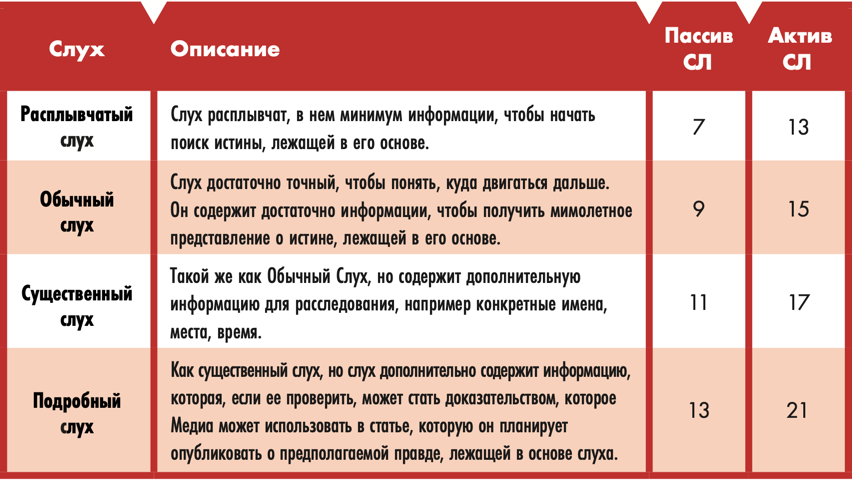

"Раньше работал в Найт-Сити Тудей, можешь в это поверить? Таскал кофе и носил камеру,
как сраный мул! Первая съемка, которая стала сенсацией? Какая-то пустышка про
пиар-ход корпорации, раздающей кибл-паки людям, нуждающимся в настоящей еде... Я
стал репортером, не для того, чтобы улыбаться в камеру и шутить с метеорологом,
подсевшим на синтококс. Вот почему я уволился. Теперь я в гуще событий: острый сюжет.
Я управляю собственным магазином, ищу потенциальных клиентов и несу людям
новости, которые им действительно нужны! Если вы хотите знать, что на самом деле
происходит в городе, кликните на неморгающие новости."
— 24/7, Репортёр Неморгающих Новостей
Ролевая способность Медиа – это Доверие. Медиа могут не только убедить аудиторию в правдивости того, что они публикуют,
чем больше доверия они вызывают, тем большую аудиторию они получают.
Медиа также имеют более высокий уровень доступа к источникам и информации, они
всегда в курсе и держат ухо в остро, чтобы быстро улавливать слухи и информацию.

Медиа глубоко интегрированны в информационные сети. Предполагая, что ты не полностью отключен от Сети, по крайней мере,
два раза в неделю ГМ будет тайно бросать твой ранг Доверия + 1d10.
Если проверка побьет любой из СЛ в колонке Пассивных слухов таблицы слухов, ГМ расскажет Медиа о слухе с наивысшей СЛ,
который побила проверка. Это те же слухи, которые Медиа могут найти, попав на Улицы во время игры,
используя свои соответствующие навыки сбора информации, такие как поиск информации, общение
или допрос.
Когда Медиа активно ищет такой слух, он бросает соответствующий СТАТ + соответствующий Навык + 1d10
против СЛ в колонке Активных слухов, которую ГМ установил для слуха, в зависимости от того, насколько он подробен.
Слухи, по определению, часто не соответствуют действительности и никогда не являются полной историей.
Раскопать все детали — твоя работа!
Помни, что за некоторые ниточки опасно дергать.
🔴 Доступ/Источники: Те, с кем можно связаться (в разумных пределах), взять интервью или иным образом получить от них информацию.
🔴 Аудитория: Сколько людей узнают про статьи или разоблачения.
🔴 Достоверность: насколько хорошо статья или разоблачение будут приняты аудиторией.
Чем выше Ранг Доверия, тем больше шансов, что люди поверят рассказам.
При публикации статьи или в любое другое время, когда ты хочешь узнать, верит ли человек
(или группа людей) статье, ты кидаешь 1d10, ориентируясь на Достоверность.
Если в твоей статье есть хотя бы одно легко проверяемое доказательство, которое доступно для понимания широким массам,
шанс того, что твоя аудитория поверит в это, увеличивается на 1.
Если она содержит более 4 различных неопровержимых доказательства, шанс того, что твоя аудитория поверит в это, увеличивается на 2.
Эти два бонуса суммируются.
Удачу (УДЧ) нельзя тратить на проверку “Достоверности”.
🔴 Влияние: насколько сильно каждая опубликованная статья или разоблачение повлияет на аудиторию. Например,
статья о незаконной экономической деятельности, на начальном уровне может лишь вынудить парочку местных
боссов, сменить свою деятельность. Но на более высоких уровнях Доверия, разоблачения могут привести к
падению целых Мегакорпораций. ГМ должен справляться с этим.
После публикации статьи/разоблачения нельзя публиковать еще одну статью на эту же тему,
если только у вас нет новой информации, которую можно добавить.
Ранги Доверия:
Ранги 1-2
🔴 Доступ / Источники: Местный босс, главарь банды, лидер местного квартала.
🔴 Аудитория: Ближайшие соседи.
🔴 Достоверность: Вероятность 2 из 10, что аудитория купится на это.
🔴 Влияние: В результате статьи/разоблачения происходят небольшие, постепенные изменения. Мелкие хулиганы напуганы и могут слегка изменить свои действия.
Ранги 3-4
🔴 Доступ / Источники: Босс городской банды, мелкий политик, управляющий менеджер Корпорации, хорошо
известный человек в местных окрестностях.
🔴 Аудитория: Ты известен, как автор статей в местных Скримлистах или в ДатаПуле.
🔴 Достоверность: Вероятность 3 из 10, что аудитория купится на это.
🔴 Влияние: В результате статьи/разоблачения происходит конкретный эффект. Местные мелкие хулиганы арестованы или лишены власти, правосудие восторжествовало.
Ранги 5-6
🔴 Доступ / Источники: Ключевая фигура в городе, городской чиновник, местная знаменитость.
🔴 Аудитория: Твои статьи расходятся по всему городу. У тебя есть рубрики в местных Скримлистах или на ТВ.
🔴 Достоверность: Вероятность 4 из 10, что аудитория купится на это.
🔴 Влияние: В результате статьи/разоблачения меняется ситуация в городе. Негодяи более высокого уровня могут быть посажены в тюрьму или лишены власти. Возможно, даже будут приняты местные законы.
Ранги 7-8
🔴 Доступ / Источники: Президент местной Корпорации, мэр или городской управляющий, городская знаменитость.
🔴 Аудитория: Твои статьи расходятся по всему штату. Ты сам по себе уже, в каком то роде, знаменитость.
🔴 Достоверность: Вероятность 5 из 10, что аудитория купится на это.
🔴 Влияние: В результате статьи/разоблачения может поменяться ситуация в нескольких городах.
Корпорации среднего уровня или “невысокое” правительство могут быть лишены власти.
Возможно, даже будут приняты законы, в нескольких городах.
Ранг 9
🔴 Доступ / Источники: Глава регионального подразделения Корпорации, государственный политик, известная знаменитость.
🔴 Аудитория: Ты многим известен по всей стране, но не всем. Если тебя кто-то увидит, скорей всего об этом расскажут в местных новостях.
🔴 Достоверность: Вероятность 6 из 10, что аудитория купится на это.
🔴 Влияние: В результате статьи/разоблачения может поменяться ситуация по всей стране.
Можно свергнуть большие корпорации или местное правительство. Возможно, даже будут приняты законы, по всей стране.
Ранг 10
🔴 Доступ / Источники: Крупный мировой лидер, глава крупной Корпорации, всемирно известная знаменитость.
🔴 Аудитория: Ты известен на весь мир. Люди просят у тебя автограф, а высокопоставленные лица используют тебя для слива важной информации.
🔴 Достоверность: Вероятность 7 из 10, что аудитория купится на это.
🔴 Влияние: В результате статьи/разоблачения может поменяется ситуация во всём мире.
Мегакорпорации и могущественные правительства могут рухнуть или быть свергнуты.
Могут быть установлены международные законы. Изменения могут затронуть миллионы людей.